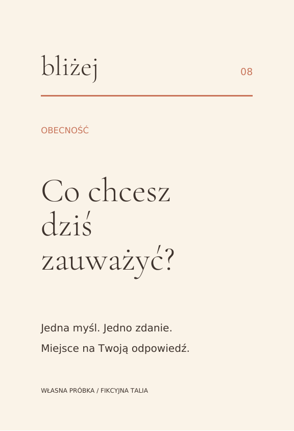
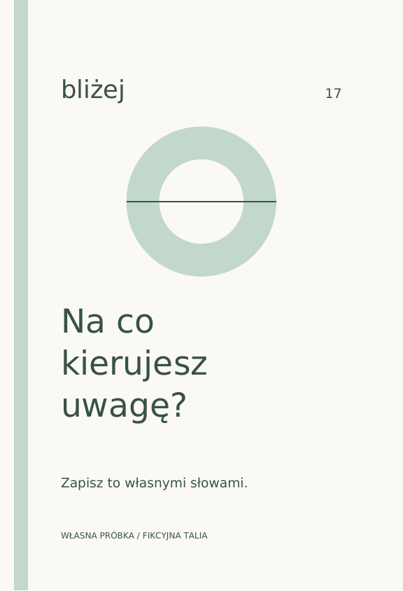
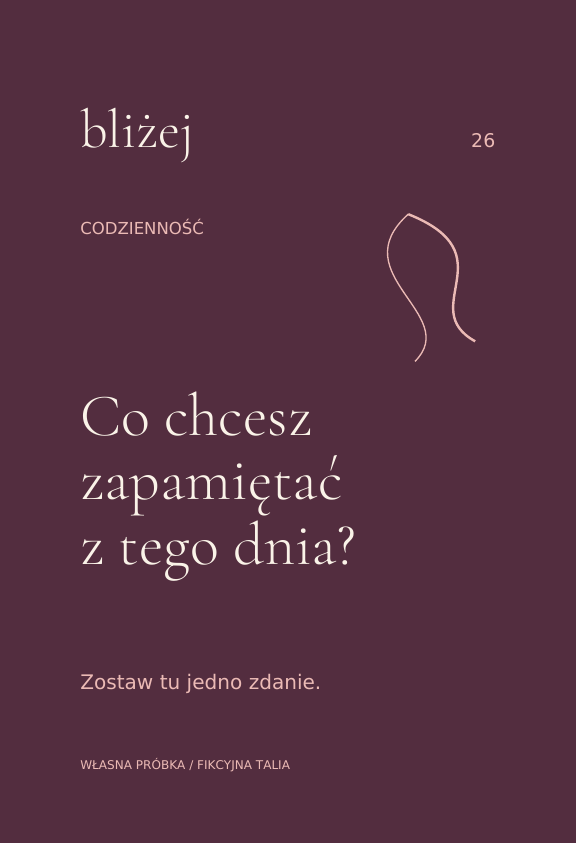
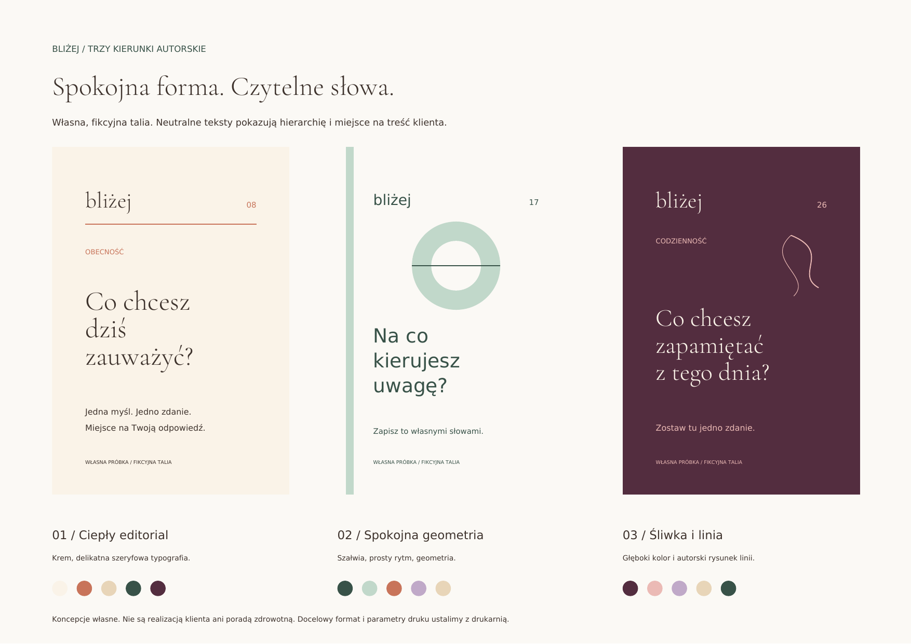

01 / Ciepły editorial
Krem, delikatna szeryfowa typografia.
PDF: awers i rewersEdytowalny awers SVGEdytowalny rewers SVGZobacz rewers
Solid Digital / własna próbka warsztatowa
BLIŻEJ to fikcyjna seria pokazująca trzy odrębne kierunki: ciepły editorial, geometrię w szałwii oraz śliwkę z autorskim rysunkiem linii. Każdy ma własny awers i rewers, wspólną hierarchię oraz paletę do rozróżnienia pięciu kategorii.

Krem, delikatna szeryfowa typografia.
PDF: awers i rewersEdytowalny awers SVGEdytowalny rewers SVGZobacz rewers

Szałwia, prosty rytm, geometria.
PDF: awers i rewersEdytowalny awers SVGEdytowalny rewers SVGZobacz rewers

Głęboki kolor i autorski rysunek linii.
PDF: awers i rewersEdytowalny awers SVGEdytowalny rewers SVGZobacz rewers

Pobierz wektorowy moodboard PDF
Pobierz komplet próbek i edytowalne źródłaTrzy pliki kart PDF zawierają awers i rewers w formacie demonstracyjnym 80 × 120 mm, spad 3 mm i margines bezpieczeństwa tekstu 7 mm. Grafika PDF jest wektorowa, używa DeviceCMYK i ma osadzone fonty. Moodboard również zachowuje wektory.
Źródła SVG są edytowalne, z kolorami RGB do ekranu i dołączonymi otwartymi fontami. Nie deklarujemy formatu PDF/X, profilu ICC, natywnego InDesign/Illustrator ani akceptacji drukarni. Wykrojnik pudełka, docelowy format, profil koloru i specyfikację produkcji uzgadniamy przed rozpoczęciem finalnych plików.